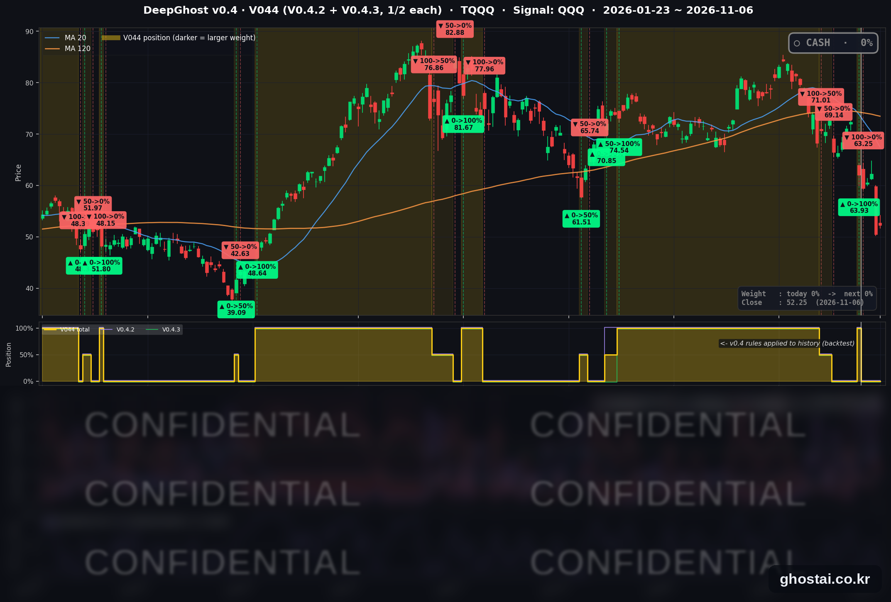

12월 금리인상 확률 78%, 금주 S&P500 -2.5%
· Ghost.AI 데일리 리포트
👻 매일 시그널과 히스토리를 홈페이지에서 한눈에 → www.ghostai.co.kr
회원 페이지 안내 — 회원 가입하시면 공식 전략 v0.4의 TQQQ 비중과 판단 근거, 원본 차트, 분석 레포트를 매일 확인하실 수 있습니다. 회원 페이지는 블로그·유튜브보다 먼저 업데이트됩니다. 지금 베타 회원을 받고 있으며, 이메일과 필명만으로 가입하실 수 있고 서비스 사용료는 받지 않습니다. 이메일 확인 후 바로 이용하실 수 있습니다.
10월 고용이 16.5만 명 늘어 12월 금리 인상 확률이 약 78% 로 올랐습니다. 나스닥은 반도체주 반등으로 1.09% 올랐지만 전일 하락분의 18.6% 만 회복했습니다. 이번 주 S&P 500 은 2.68% 내려 2025년 4월 첫째 주 이후 하락률이 가장 컸고, 구성종목 중간값은 +0.42% 로 하락이 기술주와 에너지주에 집중됐습니다. 전략은 11월 2일 시가 63.25달러에 TQQQ 를 매도한 뒤 현금 보유 중입니다.
📊 오늘의 매매 신호
| 항목 | 내용 |
|---|---|
| 오늘의 신호 | 🟡 신규 신호 없음 — 전략은 현금 보유를 유지합니다 |
| 포지션 상태 | 💵 현금 보유 중 (OUT OF POSITION) |
| 현금 보유 기간 | 2026-11-02 ~ 2026-11-06 (5일, 11월 2일 시가 매도 후) |
| TQQQ 종가 | $52.25(+3.53%) |
TQQQ 시그널 — OUT OF POSITION
현재 상태: 현금 보유 중 | 11월 2일 시가 $63.25 매도

전략은 11월 2일(월) 시가 63.25달러에 TQQQ 를 매도한 뒤 현금 보유 중이고, 11월 6일에도 새 신호는 나오지 않았습니다. TQQQ 는 3.53% 오른 52.25달러로 마감했지만 전일 하락분의 15.1% 만 회복했습니다. 이 종가는 매도가보다 17.39%, 6월 2일 최고 종가(87.22달러)보다 40.09% 낮습니다.
이번 주 TQQQ 는 15.74% 내렸고 전략 수익률은 +2.00% 입니다. +2.00% 는 10월 30일 종가 62.01달러에서 매도가 63.25달러까지의 변화입니다.
오늘 미국 시장 — 시황 요약
지수 마감
| 지수 | 종가 | 등락률 | 주간 |
|---|---|---|---|
| S&P 500 | 7,376.86 | +0.31% | -2.68% |
| 나스닥 종합 | 24,579.42 | +1.09% | -3.37% |
| 다우존스 | 51,285.73 | -0.46% | -0.94% |
| 러셀 2000 (IWM) | 273.67 | +0.99% | -2.03% |
| QQQ (나스닥100, 잠정치) | 656.10 | 1%대 상승 | -4.98% |
| TQQQ | 52.25 | +3.53% | -15.74% |
| 반도체 ETF (SOXX, 3대1 액면분할 조정) | 136.53 | +3.51% | -13.13% |
QQQ 는 전일 종가가 잠정치라 작게 정정될 수 있어 하루 등락률을 1%대로 적었습니다. 주간 수치는 영향이 없습니다.
시가에 오른 뒤 상승 폭이 줄었습니다. 나스닥은 장중 +2.10% 에서 +1.09%, S&P 500 은 +1.23% 에서 +0.31% 로 마감했습니다. S&P 500 구성종목 493개 중 173개가 올랐고 319개가 내렸으며, 등락률 중간값은 -0.71% 로 지수보다 낮습니다. 전일 하락분 회복 비율은 IWM 20.6%, 나스닥 18.6%, S&P 500 6.9% 이고, 다우는 하락이 이어졌습니다.
나스닥은 10월 6일 최고 종가보다 10.94%, S&P 500 은 5.65% 낮습니다. 나스닥은 200일선보다 2.07% 아래, S&P 500 은 0.71% 위에 있습니다.
국채 금리 동향
| 만기 | 11/5 종가 | 11/6 종가 | 전일 대비 | 주간 |
|---|---|---|---|---|
| 3개월 | 3.987% | 4.000% | +1.3bp | +2.7bp |
| 5년 | 4.608% | 4.648% | +4.0bp | -7.3bp |
| 10년 | 4.837% | 4.859% | +2.2bp | -7.0bp |
| 30년 | 5.251% | 5.260% | +0.9bp | -4.9bp |
고용보고서 뒤 금리가 올랐고 만기가 짧을수록 많이 올랐습니다. 10년물은 장중 4.90% 까지 오른 뒤 4.859% 로 마감했습니다. 미 재무부 기준 2년물은 4.51% 로 5bp 올랐고, 10년물과 3개월물의 차이는 67bp 로 역전은 없습니다.
금리가 올랐는데도 나스닥은 상승했습니다. 주간으로는 반대로 5년물과 10년물 금리가 약 7bp 내렸는데 나스닥은 3.37% 내렸습니다. 이번 주 주가 하락은 금리 상승으로 설명되지 않습니다.
연준 발언 & 금리 패스
- 데일리 샌프란시스코 연은 총재: 고용보고서를 "좋은 소식"이라고 했고, 물가가 최우선 과제이며 정책을 더 긴축해야 한다고 말했습니다(investingLive 요약). 매파적입니다.
- 무살렘 세인트루이스 연은 총재: 지역 기업들의 최우선 걱정은 여전히 물가라고 전했습니다(로이터). 매파적입니다.
- 금리 경로: 연준 기준금리는 3.75~4.00% 이고 다음 회의는 12월 8~9일입니다. 12월 0.25%p 인상 확률은 로이터 기준 전일 약 67% 에서 고용보고서 직후 85% 까지 오른 뒤 약 78% 로 내렸습니다. CME FedWatch 는 76.8%(InvestmentNews)로 시점별 차이가 있습니다. 회의 전에 10월 CPI(11/10)와 11월 고용(12/4)이 나옵니다.
오늘의 핵심 이슈
- 10월 고용이 예상을 크게 웃돌았습니다. BLS 에 따르면 비농업 고용은 16.5만 명 늘었고(예상 다우존스 5.9만·로이터 6.5만 명), 실업률은 4.1% 로 예상(4.2%)보다 낮습니다. 8·9월 고용은 합쳐서 8.4만 명 상향 수정됐습니다. 평균 시급은 전월 대비 0.4%, 전년 대비 3.1% 올라 예상(0.3%, 2.9%)을 웃돌았습니다. 약한 부분도 있습니다. 평균 실업 기간은 27.1주로 팬데믹을 빼면 2016년 이후 가장 깁니다(CNBC).
- 반도체주가 반등했지만 다수 종목은 내렸습니다. CNBC 는 전일 크게 내린 반도체주 매수를 반등 이유로 들었습니다. 세부 업종 중간값은 반도체 장비 +6.32%, 반도체 +2.16% 입니다. 마이크로소프트가 네오클라우드(AI 전용 클라우드 업체) 협력사 수를 줄이려 한다는 보도가 상승 폭을 제한했다고 CNBC 는 전했습니다. 회사는 "대형 인프라 프로젝트를 관리하는 정상적이고 책임 있는 방법"이라고 밝혔습니다. 업종 중간값은 필수소비재 -1.72%, 유틸리티·경기소비재 -1.02% 가 약했습니다.
- 이번 주 하락은 일부 업종에 집중됐습니다. S&P 500 주간 하락률은 2025년 4월 첫째 주(-9.08%) 이후 가장 크고, 나스닥·QQQ·TQQQ 는 10월 16일로 끝난 주 이후 가장 많이 내렸습니다. 그런데 S&P 500 구성종목은 493개 중 265개가 올랐고 중간값은 +0.42% 입니다. 업종 중간값은 에너지 -12.24%, 정보기술 -8.33% 인 반면 경기소비재 +3.69%, 커뮤니케이션 서비스 +3.56% 입니다. S&P 500 하락은 11월 5일(-4.36%)에서 나왔고, 나머지 4일을 합치면 +1.75% 입니다.
변동성 & 투자심리
VIX 는 28.18 에서 25.64 로 9.01% 내렸습니다. 전주 말 19.42 보다는 32.03% 높고, 금요일 종가 기준 3월 27일(31.05) 이후 가장 높습니다. 공포탐욕 지수는 집계 사이트(feargreedmeter.com) 표시값이 22(극단적 공포)로 전일 20, 1주 전 26 입니다.
매크로 & 원자재
| 품목 | 종가 | 등락률 | 주간 |
|---|---|---|---|
| 원유 ETF (USO) | $148.41 | +0.13% | -12.10% |
| WTI 선물 | $90.34 | -0.20% | -13.23% |
| 금 ETF (GLD) | $372.52 | -0.79% | +4.71% |
- 원유: WTI 주간 하락률은 4월 10일 주(-13.42%) 이후 가장 큽니다. 블룸버그는 미국·이란 협상 진전 기대, 걸프 원유 수출 회복, 주식 약세와 달러 강세를 이유로 들었습니다. 호르무즈 해협을 지나는 선박 공격은 이어지고 있습니다.
- 소비자심리: 11월 미시간대 잠정치는 51.0 으로 10월(48.0)과 시장 예상(47.3, 야후 파이낸스)보다 높습니다. 1년 기대 인플레이션은 4.7% 에서 4.3% 로 내렸습니다.
주요 종목 동향
| 종목 | 종가 | 등락률 | 주간 | 비고 |
|---|---|---|---|---|
| INTC | 56.28 | +7.71% | -14.42% | |
| QCOM | 165.41 | +5.52% | +0.38% | |
| MU | 690.00 | +5.12% | -22.01% | 시가 +7.92% 에서 상승 폭 축소 |
| TSLA | 358.22 | +4.23% | -10.40% | 사이버트럭 생산 축소 계획 (야후) |
| NVDA | 186.64 | +2.78% | -8.80% | 시가 +5.23% 에서 상승 폭 축소 |
| META | 610.15 | +0.84% | -0.79% | |
| GOOGL | 284.78 | +0.78% | +1.77% | |
| AVGO | 293.69 | +0.74% | -9.93% | 시가 +6.72% 에서 상승 폭 축소 |
| AMZN | 259.30 | -0.35% | +7.88% | |
| AAPL | 342.37 | -0.52% | -0.66% | |
| MSFT | 530.61 | -0.99% | +1.67% | 네오클라우드 축소 보도 |
| NFLX | 63.41 | -3.28% | +2.14% |
커버리지 12종목 중 8종목이 올랐습니다. 주간으로는 반도체 종목의 하락 폭이 크고 대형 플랫폼 기업은 작게 움직였습니다.
다음 일정 (미 동부시간)
- 11/9(월) 08:40 보먼 연준 감독 부의장 대담 / 13:00 3년물 입찰
- 11/10(화) 08:30 10월 CPI (예상 전월 대비 +0.3%, 근원 +0.2%, CMC·TD 증권) / 13:00 10년물 입찰 / 17:00 CoreWeave 실적 콘퍼런스콜
- 11/11(수) 재향군인의 날. 주식시장은 개장하고, SIFMA 는 채권시장 휴장을 권고합니다
- 11/12(목) 08:30 주간 신규 실업수당 청구 / 13:00 30년물 입찰 / 장 후 Cisco·Applied Materials 실적 (Earnings Whispers)
- 11/13(금) 08:30 10월 PPI
- 11/18(수) 14:00 10월 FOMC 의사록
- 12/4(금) 08:30 11월 고용보고서
- 12/8~12/9 FOMC
Ghost.AI — Quantitative AI Investment
Model: DeepGhost v0.4 | Transformer-Based Deep Learning
Coverage: 14 tickers | Updated every trading day after US market close
⚠️ 본 자료는 정보 제공 목적으로만 작성되었으며 투자 권유가 아닙니다. 모든 투자의 책임은 투자자 본인에게 있습니다. 과거 성과가 미래 수익을 보장하지 않습니다.
[유의사항]
- 본 서비스는 불특정 다수를 대상으로 발행되는 단방향 정보 제공 서비스이며, 투자자 개인의 재산 상황·투자 목적·위험 선호도를 반영한 개별 투자 조언이 아닙니다.
- 고스트에이아이 주식회사는 고객과 쌍방향 의사소통(개별 상담, 맞춤형 자문 등)을 제공하지 않습니다.
- 본 콘텐츠는 투자 권유 또는 매매 주문의 청약·청약의 권유에 해당하지 않으며, 최종 투자 판단 및 그에 따른 손익의 책임은 전적으로 투자자 본인에게 있습니다.
고스트에이아이 주식회사